sim.dat<-data.frame(x=rbeta(10000,O3.parameters$alpha,O3.parameters$beta))
sim.dat%>%ggplot(aes(x=x))+geom_density()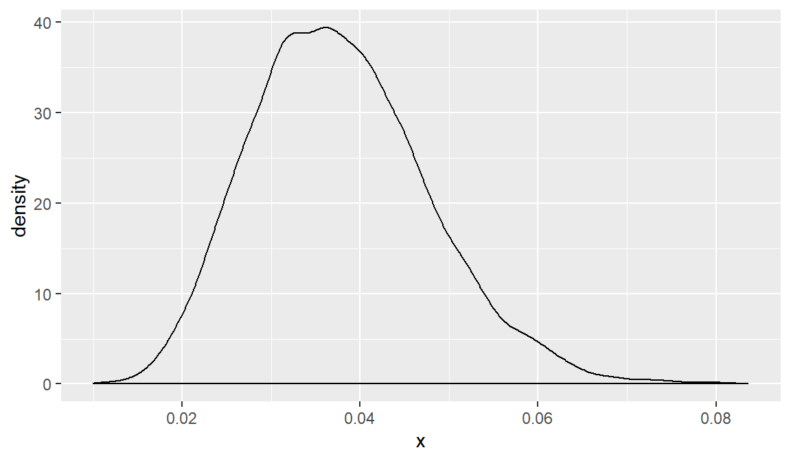
-Benefit of this methodology is updating \(p_j\) is straightforward, given a test of size \(n\) with \(f\) failures:
\(f(p_j|Test)= Beta(\alpha^*=\alpha+f,\beta^*=\beta+n-f)\)
alph.star=O3.parameters$alpha+10
bet.star=O3.parameters$beta+90
sim.dat<-data.frame(x=rbeta(10000,alph.star,bet.star))
sim.dat%>%ggplot(aes(x=x))+geom_density()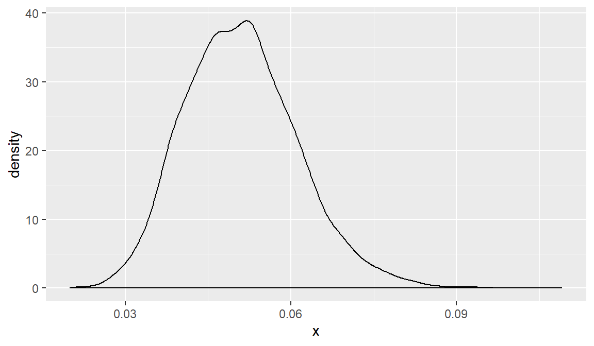
sim.dat<-data.frame(x=rgamma(10000,lam.prior$alpha,scale=lam.prior$beta))
sim.dat%>%ggplot(aes(x=x))+geom_density()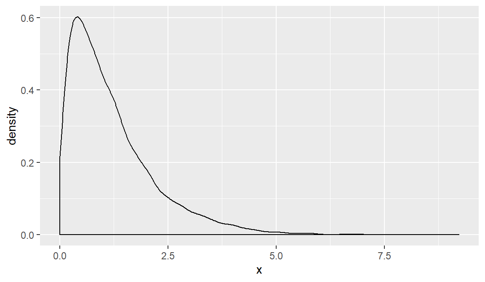
Subset of Projectile Firing
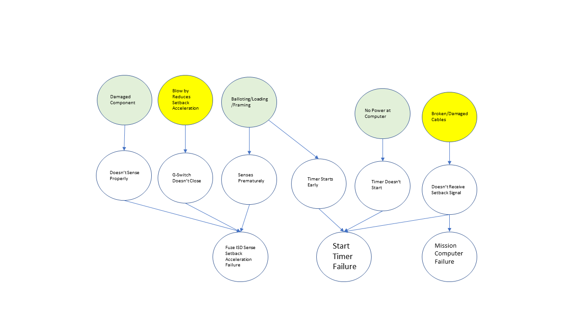
O1.parameters<-estBetaParams(.01,.005^2)
sim.dat<-data.frame(x=rbeta(10000,O1.parameters$alpha,O1.parameters$beta))
sim.dat%>%ggplot(aes(x=x))+geom_density()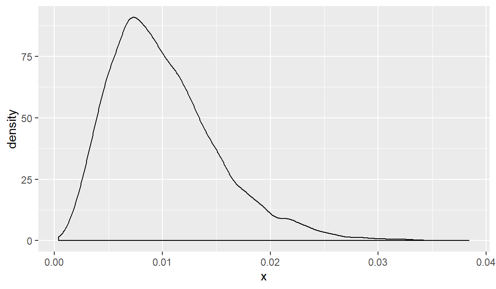
O3.parameters<-estBetaParams(.035,.01^2)
sim.dat<-data.frame(x=rbeta(10000,O3.parameters$alpha,O3.parameters$beta))
sim.dat%>%ggplot(aes(x=x))+geom_density()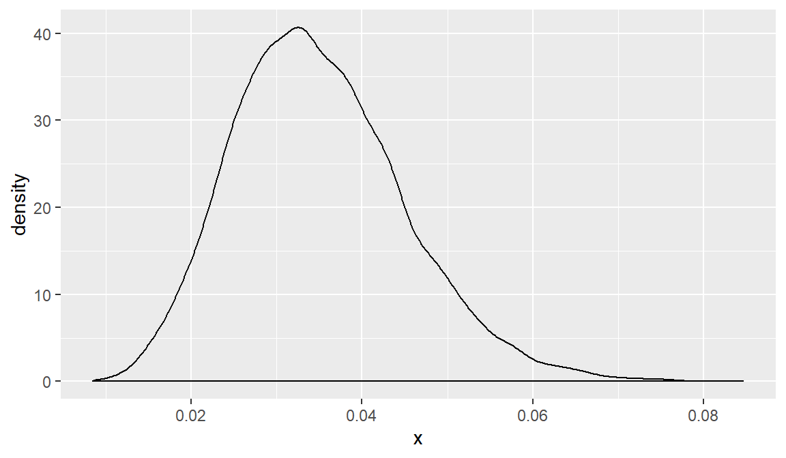
sim.g1<-rbeta(5000,O1.parameters$alpha,O1.parameters$beta)
sim.g2<-rbeta(5000,O1.parameters$alpha,O1.parameters$beta)
sim.g3<-rbeta(5000,O1.parameters$alpha,O1.parameters$beta)
sim.y1<-rbeta(5000,O3.parameters$alpha,O3.parameters$beta)
sim.y2<-rbeta(5000,O3.parameters$alpha,O3.parameters$beta)
succ<-data.frame(x=(1-sim.g1)*(1-sim.g2)*(1-sim.g3)*(1-sim.y1)*(1-sim.y2))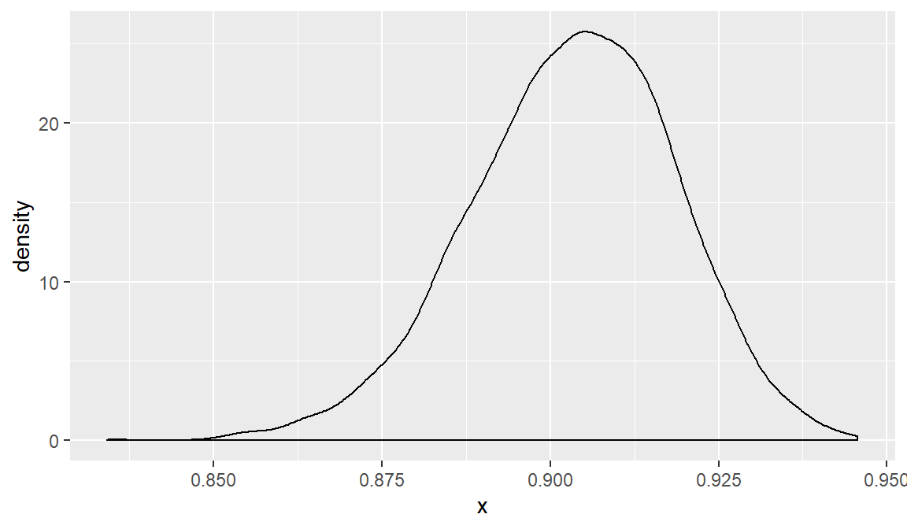
values<-p.func(100)
O3.parameters<-estBetaParams((values$p.low+values$p.high)/2,.01^2)
sim.g1<-rbeta(5000,O1.parameters$alpha,O1.parameters$beta)
sim.g2<-rbeta(5000,O1.parameters$alpha,O1.parameters$beta)
sim.g3<-rbeta(5000,O1.parameters$alpha,O1.parameters$beta)
sim.y1<-rbeta(5000,O3.parameters$alpha,O3.parameters$beta)
sim.y2<-rbeta(5000,O3.parameters$alpha,O3.parameters$beta)
succ<-data.frame(x=(1-sim.g1)*(1-sim.g2)*(1-sim.g3)*(1-sim.y1)*(1-sim.y2))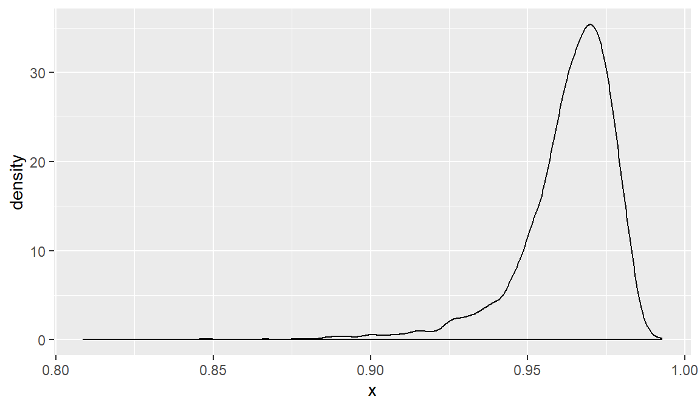
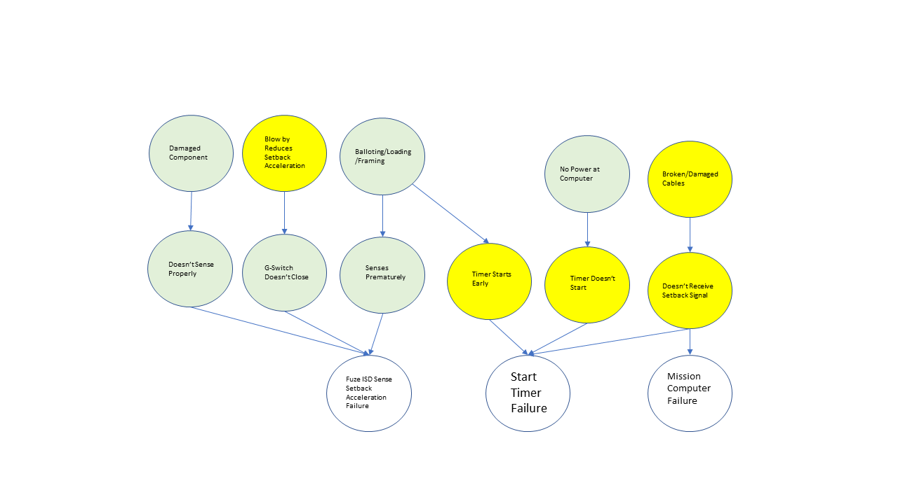
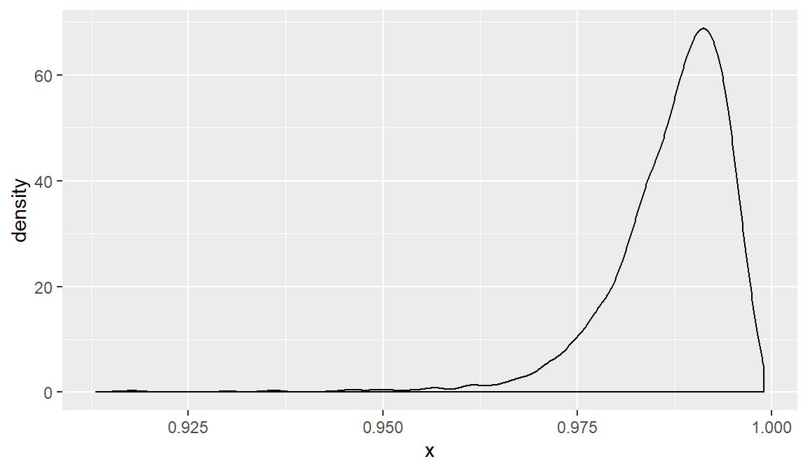
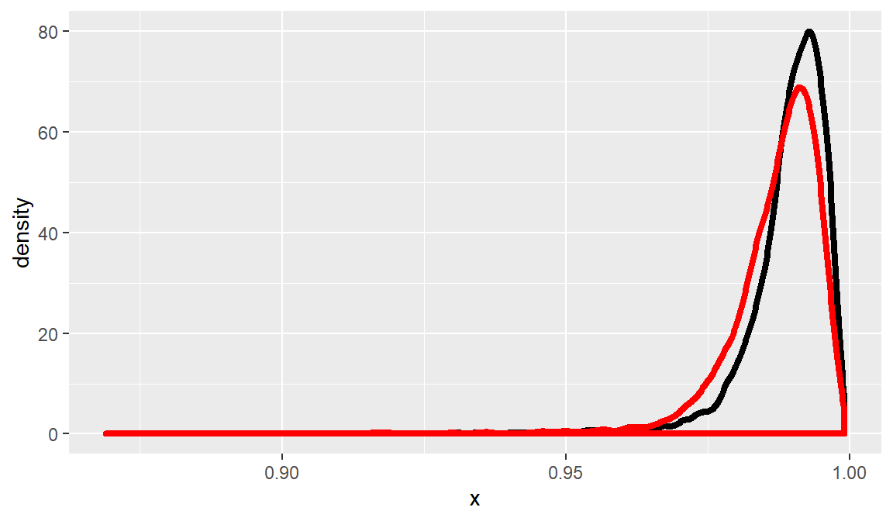
Are these all independent?
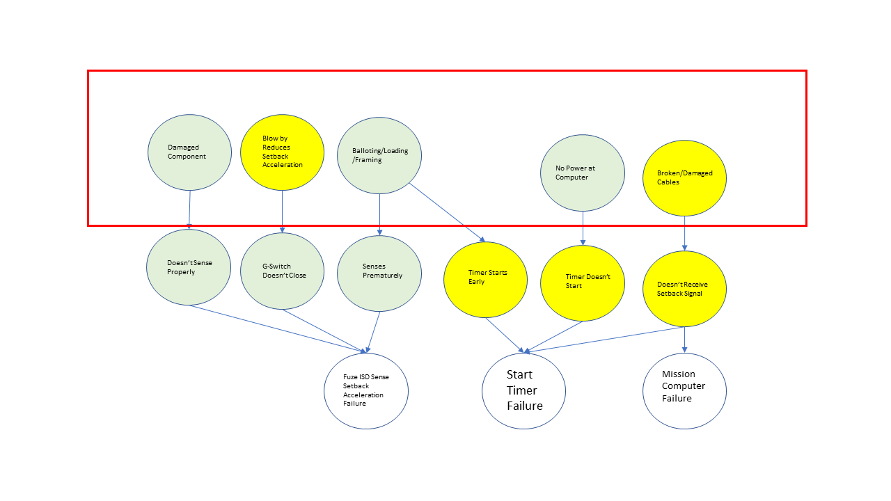